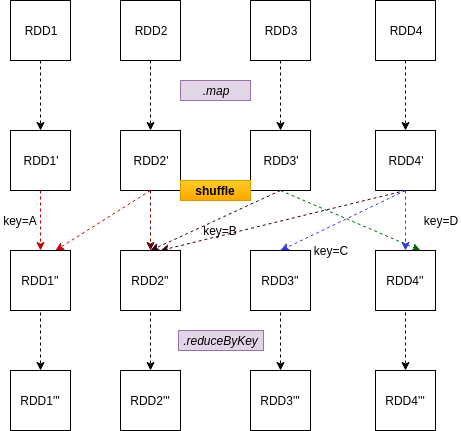

<!DOCTYPE html><html lang="en"><head><meta charset="UTF-8"><meta name="viewport" content="width=device-width"><meta name="theme-color" content="#222"><meta name="generator" content="Hexo 5.4.0"><link rel="apple-touch-icon" sizes="180x180" href="/images/apple-touch-icon-next.png"><link rel="icon" type="image/png" sizes="32x32" href="/images/favicon-32x32.png"><link rel="icon" type="image/png" sizes="16x16" href="/images/my-favicon-16x16.png"><link rel="mask-icon" href="/images/logo.svg" color="#222"><link rel="stylesheet" href="/css/main.css"><link rel="stylesheet" href="https://cdnjs.cloudflare.com/ajax/libs/font-awesome/5.15.4/css/all.min.css" integrity="sha256-mUZM63G8m73Mcidfrv5E+Y61y7a12O5mW4ezU3bxqW4=" crossorigin="anonymous"><link rel="stylesheet" href="https://cdnjs.cloudflare.com/ajax/libs/animate.css/3.1.1/animate.min.css" integrity="sha256-PR7ttpcvz8qrF57fur/yAx1qXMFJeJFiA6pSzWi0OIE=" crossorigin="anonymous"><link rel="stylesheet" href="https://cdnjs.cloudflare.com/ajax/libs/fancybox/3.5.7/jquery.fancybox.min.css" integrity="sha256-Vzbj7sDDS/woiFS3uNKo8eIuni59rjyNGtXfstRzStA=" crossorigin="anonymous"><script class="next-config" data-name="main" type="application/json">{"hostname":"rovo98.github.io","root":"/","images":"/images","scheme":"Mist","version":"8.7.1","exturl":false,"sidebar":{"position":"left","display":"post","padding":18,"offset":12},"copycode":true,"bookmark":{"enable":false,"color":"#222","save":"auto"},"mediumzoom":false,"lazyload":true,"pangu":true,"comments":{"style":"tabs","active":null,"storage":true,"lazyload":false,"nav":null},"motion":{"enable":true,"async":false,"transition":{"post_block":"fadeIn","post_header":"fadeInDown","post_body":"fadeInDown","coll_header":"fadeInLeft","sidebar":"fadeInUp"}},"prism":false,"i18n":{"placeholder":"Searching...","empty":"We didn't find any results for the search: ${query}","hits_time":"${hits} results found in ${time} ms","hits":"${hits} results found"},"path":"/search.xml","localsearch":{"enable":true,"trigger":"auto","top_n_per_article":5,"unescape":false,"preload":false}}</script><script src="/js/config.js"></script><meta name="description" content="Spark action 算子触发 Spark 作业执行，一个作业 job 包含若干阶段 stage，而 Spark 划分 stage 的依据是 transformation 算子之间是否存在宽依赖（wide dependencies），即以 shuffle 操作来划分 stage，一个 stage 会尽可能地包含更多窄依赖 transformations。 Shuffle 是 Spark 用于跨"><meta property="og:type" content="article"><meta property="og:title" content="Data Shuffling in Spark"><meta property="og:url" content="http://rovo98.github.io/posts/350ed39b/index.html"><meta property="og:site_name" content="rovo98&#39;s Blog"><meta property="og:description" content="Spark action 算子触发 Spark 作业执行，一个作业 job 包含若干阶段 stage，而 Spark 划分 stage 的依据是 transformation 算子之间是否存在宽依赖（wide dependencies），即以 shuffle 操作来划分 stage，一个 stage 会尽可能地包含更多窄依赖 transformations。 Shuffle 是 Spark 用于跨"><meta property="og:locale" content="en_US"><meta property="og:image" content="http://rovo98.github.io/posts/350ed39b/spark_shuffle.png"><meta property="article:published_time" content="2021-03-25T03:50:00.000Z"><meta property="article:modified_time" content="2022-11-13T13:11:42.590Z"><meta property="article:author" content="rovo98"><meta property="article:tag" content="spark"><meta name="twitter:card" content="summary"><meta name="twitter:image" content="http://rovo98.github.io/posts/350ed39b/spark_shuffle.png"><link rel="canonical" href="http://rovo98.github.io/posts/350ed39b/"><script class="next-config" data-name="page" type="application/json">{"sidebar":"","isHome":false,"isPost":true,"lang":"en","comments":true,"permalink":"http://rovo98.github.io/posts/350ed39b/","path":"posts/350ed39b/","title":"Data Shuffling in Spark"}</script><script class="next-config" data-name="calendar" type="application/json">""</script><title>Data Shuffling in Spark | rovo98's Blog</title><noscript><link rel="stylesheet" href="/css/noscript.css"></noscript><link rel="alternate" href="/atom.xml" title="rovo98's Blog" type="application/atom+xml">
</head><body itemscope itemtype="http://schema.org/WebPage" class="use-motion"><div class="headband"></div><main class="main"><header class="header" itemscope itemtype="http://schema.org/WPHeader"><div class="header-inner"><div class="site-brand-container"><div class="site-nav-toggle"><div class="toggle" aria-label="Toggle navigation bar" role="button"><span class="toggle-line"></span> <span class="toggle-line"></span> <span class="toggle-line"></span></div></div><div class="site-meta"><a href="/" class="brand" rel="start"><i class="logo-line"></i><h1 class="site-title">rovo98's Blog</h1><i class="logo-line"></i></a><p class="site-subtitle" itemprop="description">Leave your comfort zone!</p></div><div class="site-nav-right"><div class="toggle popup-trigger"><i class="fa fa-search fa-fw fa-lg"></i></div></div></div><nav class="site-nav"><ul class="main-menu menu"><li class="menu-item menu-item-home"><a href="/" rel="section"><i class="fa fa-home fa-fw"></i>Home</a></li><li class="menu-item menu-item-archives"><a href="/archives/" rel="section"><i class="fa fa-archive fa-fw"></i>Archives<span class="badge">53</span></a></li><li class="menu-item menu-item-categories"><a href="/categories/" rel="section"><i class="fa fa-th fa-fw"></i>Categories<span class="badge">21</span></a></li><li class="menu-item menu-item-tags"><a href="/tags/" rel="section"><i class="fa fa-tags fa-fw"></i>Tags<span class="badge">41</span></a></li><li class="menu-item menu-item-reading-list"><a href="/reading-list/" rel="section"><i class="fa fa-book fa-fw"></i>Reading List</a></li><li class="menu-item menu-item-tech-weekly"><a href="/tech-weekly/" rel="section"><i class="fa fa-flask fa-fw"></i>Tech Weekly</a></li><li class="menu-item menu-item-about"><a href="/about/" rel="section"><i class="fa fa-user fa-fw"></i>About</a></li><li class="menu-item menu-item-search"><a role="button" class="popup-trigger"><i class="fa fa-search fa-fw"></i>Search</a></li></ul></nav><div class="search-pop-overlay"><div class="popup search-popup"><div class="search-header"><span class="search-icon"><i class="fa fa-search"></i></span><div class="search-input-container"><input autocomplete="off" autocapitalize="off" maxlength="80" placeholder="Searching..." spellcheck="false" type="search" class="search-input"></div><span class="popup-btn-close" role="button"><i class="fa fa-times-circle"></i></span></div><div class="search-result-container no-result"><div class="search-result-icon"><i class="fa fa-spinner fa-pulse fa-5x"></i></div></div></div></div></div><div class="toggle sidebar-toggle" role="button"><span class="toggle-line"></span> <span class="toggle-line"></span> <span class="toggle-line"></span></div><aside class="sidebar"><div class="sidebar-inner sidebar-nav-active sidebar-toc-active"><ul class="sidebar-nav"><li class="sidebar-nav-toc">Table of Contents</li><li class="sidebar-nav-overview">Overview</li></ul><div class="sidebar-panel-container"><div class="post-toc-wrap sidebar-panel"><div class="post-toc animated"><ol class="nav"><li class="nav-item nav-level-3"><a class="nav-link" href="#spark-rdd-shuffle"><span class="nav-number">1.</span> <span class="nav-text">Spark RDD Shuffle</span></a></li><li class="nav-item nav-level-3"><a class="nav-link" href="#spark-sql-dataframe-shuffle"><span class="nav-number">2.</span> <span class="nav-text">Spark SQL DataFrame Shuffle</span></a></li><li class="nav-item nav-level-3"><a class="nav-link" href="#shuffle-%E5%88%86%E5%8C%BA%E6%95%B0"><span class="nav-number">3.</span> <span class="nav-text">Shuffle 分区数</span></a></li><li class="nav-item nav-level-3"><a class="nav-link" href="#spark-shuffle-manager"><span class="nav-number">4.</span> <span class="nav-text">Spark Shuffle manager</span></a><ol class="nav-child"><li class="nav-item nav-level-4"><a class="nav-link" href="#sort-shuffle-manager"><span class="nav-number">4.1.</span> <span class="nav-text">Sort shuffle manager</span></a></li><li class="nav-item nav-level-4"><a class="nav-link" href="#shuffle-manager-%E5%BA%95%E5%B1%82%E5%AE%9E%E7%8E%B0"><span class="nav-number">4.2.</span> <span class="nav-text">Shuffle manager 底层实现</span></a></li></ol></li><li class="nav-item nav-level-3"><a class="nav-link" href="#summary"><span class="nav-number">5.</span> <span class="nav-text">Summary</span></a></li><li class="nav-item nav-level-3"><a class="nav-link" href="#references"><span class="nav-number">6.</span> <span class="nav-text">References</span></a></li><li class="nav-item nav-level-3"><a class="nav-link" href="#more"><span class="nav-number">7.</span> <span class="nav-text">More</span></a></li></ol></div></div><div class="site-overview-wrap sidebar-panel"><div class="site-overview"><div class="site-author site-overview-item animated" itemprop="author" itemscope itemtype="http://schema.org/Person"><p class="site-author-name" itemprop="name">rovo98</p><div class="site-description" itemprop="description"></div></div><div class="site-state-wrap site-overview-item animated"><nav class="site-state"><div class="site-state-item site-state-posts"><a href="/archives/"><span class="site-state-item-count">53</span> <span class="site-state-item-name">posts</span></a></div><div class="site-state-item site-state-categories"><a href="/categories/"><span class="site-state-item-count">21</span> <span class="site-state-item-name">categories</span></a></div><div class="site-state-item site-state-tags"><a href="/tags/"><span class="site-state-item-count">41</span> <span class="site-state-item-name">tags</span></a></div></nav></div><div class="links-of-author site-overview-item animated"><span class="links-of-author-item"><a href="https://twitter.com/rovo98" title="Twitter → https:&#x2F;&#x2F;twitter.com&#x2F;rovo98" rel="noopener" target="_blank"><i class="fab fa-twitter fa-fw"></i>Twitter</a> </span><span class="links-of-author-item"><a href="https://github.com/rovo98" title="GitHub → https:&#x2F;&#x2F;github.com&#x2F;rovo98" rel="noopener" target="_blank"><i class="github fa-fw"></i>GitHub</a></span></div><div class="cc-license site-overview-item animated" itemprop="license"><a href="https://creativecommons.org/licenses/by-nc-sa/4.0/en" class="cc-opacity" rel="noopener" target="_blank"></a></div><div class="links-of-blogroll site-overview-item animated"><div class="links-of-blogroll-title"><i class="fa fa-globe fa-fw"></i> Links</div><ul class="links-of-blogroll-list"><li class="links-of-blogroll-item"><a href="https://dclunatic.github.io/" title="https:&#x2F;&#x2F;dcLunatic.github.io" rel="noopener" target="_blank">dcLunatic</a></li><li class="links-of-blogroll-item"><a href="https://adj325.github.io/" title="https:&#x2F;&#x2F;adj325.github.io" rel="noopener" target="_blank">Adj325</a></li><li class="links-of-blogroll-item"><a href="https://rovo98.github.io/leetcode-solutions" title="https:&#x2F;&#x2F;rovo98.github.io&#x2F;leetcode-solutions">rovo98's Leetcode Adventure</a></li></ul></div></div></div></div></div></aside><div class="sidebar-dimmer"></div></header><div class="back-to-top" role="button" aria-label="Back to top"><i class="fa fa-arrow-up"></i> <span>0%</span></div><div class="reading-progress-bar"></div><noscript><div class="noscript-warning">Theme NexT works best with JavaScript enabled</div></noscript><div class="main-inner post posts-expand"><div class="post-block"><article itemscope itemtype="http://schema.org/Article" class="post-content" lang="en"><link itemprop="mainEntityOfPage" href="http://rovo98.github.io/posts/350ed39b/"><span hidden itemprop="author" itemscope itemtype="http://schema.org/Person"><meta itemprop="image" content="/images/personal-logo.jpg"><meta itemprop="name" content="rovo98"><meta itemprop="description" content=""></span><span hidden itemprop="publisher" itemscope itemtype="http://schema.org/Organization"><meta itemprop="name" content="rovo98's Blog"></span><header class="post-header"><h1 class="post-title" itemprop="name headline">Data Shuffling in Spark</h1><div class="post-meta-container"><div class="post-meta"><span class="post-meta-item"><span class="post-meta-item-icon"><i class="far fa-calendar"></i> </span><span class="post-meta-item-text">Posted on</span> <time title="Created: 2021-03-25 11:50:00" itemprop="dateCreated datePublished" datetime="2021-03-25T11:50:00+08:00">2021-03-25</time> </span><span class="post-meta-item"><span class="post-meta-item-icon"><i class="far fa-folder"></i> </span><span class="post-meta-item-text">In</span> <span itemprop="about" itemscope itemtype="http://schema.org/Thing"><a href="/categories/BigData/" itemprop="url" rel="index"><span itemprop="name">BigData</span></a> </span>, <span itemprop="about" itemscope itemtype="http://schema.org/Thing"><a href="/categories/BigData/Spark/" itemprop="url" rel="index"><span itemprop="name">Spark</span></a> </span></span><span id="/posts/350ed39b/" class="post-meta-item leancloud_visitors" data-flag-title="Data Shuffling in Spark" title="Views"><span class="post-meta-item-icon"><i class="far fa-eye"></i> </span><span class="post-meta-item-text">Views: </span><span class="leancloud-visitors-count"></span> </span><span class="post-meta-item" title="Views" id="busuanzi_container_page_pv"><span class="post-meta-item-icon"><i class="far fa-eye"></i> </span><span class="post-meta-item-text">Views: </span><span id="busuanzi_value_page_pv"></span></span></div></div></header><div class="post-body" itemprop="articleBody"><p>Spark action 算子触发 Spark 作业执行，一个作业 job 包含若干阶段 stage，而 Spark 划分 stage 的依据是 transformation 算子之间是否存在宽依赖（wide dependencies），即以 shuffle 操作来划分 stage，一个 stage 会尽可能地包含更多窄依赖 transformations。</p><p>Shuffle 是 Spark 用于跨 JVM (executor) 甚至跨机器（不同节点上的 executor 或 driver）的数据重分发机制。需要注意的是，Spark Shuffle 是一个昂贵的操作，因为它通常包含以下开销：</p><ul><li>磁盘 I/O</li><li>涉及数据序列化与反序列化</li><li>网络 I/O</li></ul><p>因此，为了提高 Spark 开发应用的性能，我们应尽可能地避免 shuffle。</p><span id="more"></span><h3 id="spark-rdd-shuffle"><a class="markdownIt-Anchor" href="#spark-rdd-shuffle"></a> Spark RDD Shuffle</h3><p>我们知道 Spark 是 lazy 计算的，因此，当从某一外部稳定存储或现有 RDD，创建一个新 RDD 时，相应 RDD 分区中并不持有相应 key 数据，也无法在创建 RDD 时同时为该数据集设置相应的分区 key 数据。</p><p>因而，当该新创建 pair RDD 执行如 <code>reduceByKey()</code> 操作来根据 key 对数据进行聚合时，Spark 会做以下操作：</p><ul><li>Spark 首先会在 RDD 的作用分区上运行 map 任务，map 任务会将单个 key 的所有值进行分组；</li><li>map 任务得到的结果会维持在内存中；</li><li>当内存不足，Spark 会将结果数据保存到磁盘中；</li><li>Spark 接着会跨分区 shuffle 这些已映射的数据，有时会将已 shuffle 的数据存储到磁盘中，以进行重用；</li><li>执行垃圾回收；</li><li>最后，在每一个分区上运行基于 key 的 reduce 任务。</li></ul><p></p><p>Spark RDD 触发 shuffle 的操作有 <code>repartition()</code>、<code>coalesce()</code>、<code>groupByKey()</code>、<code>reduceByKey()</code>、<code>cogroup()</code> 和 <code>join()</code> 等。</p><p>NOTICE: shuffle 并不一定会改变 RDD 的分区数。</p><h3 id="spark-sql-dataframe-shuffle"><a class="markdownIt-Anchor" href="#spark-sql-dataframe-shuffle"></a> Spark SQL DataFrame Shuffle</h3><p>与 RDD 不同，Spark SQL DataFrame API 在执行需要 shuffle 的 transformation 操作后，其分区数将会增加。能触发 shuffle 的 DataFrame 操作有 <code>join()</code>、<code>union()</code> 以及所有聚合函数（aggregate functions）。</p><p>如：</p><figure class="highlight scala"><table><tr><td class="gutter"><pre><span class="line">1</span><br><span class="line">2</span><br><span class="line">3</span><br><span class="line">4</span><br><span class="line">5</span><br><span class="line">6</span><br><span class="line">7</span><br><span class="line">8</span><br><span class="line">9</span><br><span class="line">10</span><br><span class="line">11</span><br><span class="line">12</span><br><span class="line">13</span><br><span class="line">14</span><br><span class="line">15</span><br><span class="line">16</span><br><span class="line">17</span><br><span class="line">18</span><br><span class="line">19</span><br><span class="line">20</span><br><span class="line">21</span><br></pre></td><td class="code"><pre><span class="line"><span class="keyword">val</span> spark = <span class="type">SparkSession</span>.builder()</span><br><span class="line">						.master(local[*])</span><br><span class="line">						.appName(<span class="string">&quot;DataFrameShufflePartitions&quot;</span>)</span><br><span class="line">						.getOrCreate()</span><br><span class="line"></span><br><span class="line"><span class="keyword">import</span> spark.implicits._</span><br><span class="line"></span><br><span class="line"><span class="keyword">val</span> simpleData = <span class="type">Seq</span>((<span class="string">&quot;James&quot;</span>, <span class="string">&quot;Sales&quot;</span>, <span class="string">&quot;NY&quot;</span>, <span class="number">90000</span>, <span class="number">34</span>, <span class="number">10000</span>),</span><br><span class="line">                    (<span class="string">&quot;Michael&quot;</span>, <span class="string">&quot;Sales&quot;</span>, <span class="string">&quot;NY&quot;</span>, <span class="number">86000</span>, <span class="number">56</span>, <span class="number">20000</span>),</span><br><span class="line">                    (<span class="string">&quot;Robert&quot;</span>, <span class="string">&quot;Sales&quot;</span>, <span class="string">&quot;CA&quot;</span>, <span class="number">81000</span>, <span class="number">30</span>, <span class="number">23000</span>),</span><br><span class="line">                    (<span class="string">&quot;Maria&quot;</span>, <span class="string">&quot;Finance&quot;</span>, <span class="string">&quot;CA&quot;</span>, <span class="number">90000</span>, <span class="number">24</span>, <span class="number">23000</span>),</span><br><span class="line">                    (<span class="string">&quot;Raman&quot;</span>, <span class="string">&quot;Finance&quot;</span>, <span class="string">&quot;CA&quot;</span>, <span class="number">99000</span>, <span class="number">40</span>, <span class="number">24000</span>),</span><br><span class="line">                    (<span class="string">&quot;Scott&quot;</span>, <span class="string">&quot;Finance&quot;</span>, <span class="string">&quot;NY&quot;</span>, <span class="number">83000</span>, <span class="number">36</span>, <span class="number">19000</span>),</span><br><span class="line">                    (<span class="string">&quot;Jen&quot;</span>, <span class="string">&quot;Finance&quot;</span>, <span class="string">&quot;NY&quot;</span>, <span class="number">79000</span>, <span class="number">53</span>, <span class="number">15000</span>),</span><br><span class="line">                    (<span class="string">&quot;Jeff&quot;</span>, <span class="string">&quot;Marketing&quot;</span>, <span class="string">&quot;CA&quot;</span>, <span class="number">80000</span>, <span class="number">25</span>, <span class="number">18000</span>),</span><br><span class="line">                    (<span class="string">&quot;Kumar&quot;</span>, <span class="string">&quot;Marketing&quot;</span>, <span class="string">&quot;NY&quot;</span>, <span class="number">91000</span>, <span class="number">50</span>, <span class="number">21000</span>)</span><br><span class="line">                  )</span><br><span class="line"><span class="keyword">val</span> df = simpleData.toDF(<span class="string">&quot;employee_name&quot;</span>, <span class="string">&quot;department&quot;</span>, <span class="string">&quot;state&quot;</span>, <span class="string">&quot;salary&quot;</span>, <span class="string">&quot;age&quot;</span>, <span class="string">&quot;bonus&quot;</span>)</span><br><span class="line"><span class="keyword">val</span> df2 = df.groupBy(<span class="string">&quot;state&quot;</span>).count()</span><br><span class="line"></span><br><span class="line">println(df2.rdd.getNumPartitions)</span><br></pre></td></tr></table></figure><p>上面输出的分区数为 200， Spark 会在执行数据 shuffle 操作时，自动将分区数增加到 200，该值由配置 <code>spark.sql.shuffle.partitions</code> 指定，默认为 200。可进行自定义修改：</p><figure class="highlight scala"><table><tr><td class="gutter"><pre><span class="line">1</span><br><span class="line">2</span><br></pre></td><td class="code"><pre><span class="line">spark.conf.set(<span class="string">&quot;spark.sql.shuffle.partitions&quot;</span>, <span class="number">100</span>)</span><br><span class="line">println(df.groupBy(<span class="string">&quot;_c0&quot;</span>).count().rdd.getNumPartitions)</span><br></pre></td></tr></table></figure><h3 id="shuffle-分区数"><a class="markdownIt-Anchor" href="#shuffle-分区数"></a> Shuffle 分区数</h3><p>取决于数据集的大小、 CPU 核的数据以及内存等，Spark Shuffle 对作业的影响可以说是有利有弊。</p><p>当处理的数据量较小时，我们应尽可能地减少 shuffle 分区数，否则将使其产生较多的分区文件，但每个分区包含的结果数据很少，会运行许多任务来处理很少量的数据。</p><p>另一方面，当有非常大数据量处理却只拥有少量分区数时，则会造成任务运行时间过长，甚至出现 OOM 问题。</p><p>因此，在实践中，配置一个合适的 shuffle 分区数往往需要多次尝试运行来进行调优。当 Spark 作业有性能问题时，这也是检查关键点之一。</p><h3 id="spark-shuffle-manager"><a class="markdownIt-Anchor" href="#spark-shuffle-manager"></a> Spark Shuffle manager</h3><p>在 Spark 中，数据 shuffle 的过程并非是不可控的，shuffle 过程由 <code>ShuffleManager</code> 的实现进行处理，我们可通过指定 <code>spark.shuffle.manager</code> 配置的值来选择具体的实现，可选值为 <code>sort</code> 以及 <code>tungsten-sort</code> - 这两种实现实现在 Spark 内部均由一个类表示 - <code>SortShuffleManager</code>，当然，我们还可选择自定义实现，并将 <code>spark-shuffle.manager</code> 属性值指定为自定义实现类的全称限定名。一些现有的自定义 <code>ShuffleManager</code> 实现有 <a target="_blank" rel="noopener" href="https://github.com/Intel-bigdata/Spark-PMoF">Spark-PMoF</a>、<a target="_blank" rel="noopener" href="https://github.com/MemVerge/splash">splash</a> 等。</p><p>此外，我们还能指定 shuffle 数据是否进行压缩（<code>spark.shuffle.compress</code>, 默认为 <code>true</code>），使用的压缩编码方式由 <code>spark.io.compression.codec</code> 指定。使用压缩可以减少在网络传输中的数据量，但在数据读取阶段则需要额外的解压缩步骤。</p><h4 id="sort-shuffle-manager"><a class="markdownIt-Anchor" href="#sort-shuffle-manager"></a> Sort shuffle manager</h4><p>在 Spark 2.0 发布后，其 shuffle 管理发生了一些改变。Spark 完全移除了 hash shuffle manager，仅保留了 <strong>sort-based shuffle manager</strong> (基于排序的 shuffle 管理器)。</p><p>由于历史关系，且为了更好地了解 sort-based shuffle manager，我们简单了解一下为什么 Spark 要淘汰 hash shuffle manager，它主要有以下两大缺点：</p><ul><li>创建的中间文件过多 - 每个 mapper 都会为每个 reducer 创建一个文件，如若有 5 个 mapper 及 5 个 reducer，则 hash-based shuffle manager 需要操作 25 个文件（当然在实际大数据环境中肯定远远不止 25 个文件）；</li><li>随机写问题 - 与顺序写（sequential write）不同，随机写（random write）包含了写以及检索（seek），由于增加了检索步骤，速度自然要慢一些，而又因需要操作非常多的文件，整体性能自然就大大降低了。</li></ul><p>Sort-based shuffle manager 的出现，改变了 Spark 的 shuffle 管理，其 mapper 将所有分区记录只写到单个文件。为了理解该 shuffle manager 的 shuffle 工作流程，下方列出了它涉及到的一些重要步骤：</p><ol><li><p>首先，mapper 在使用 <code>PartitionedAppendOnlyMap</code> 将所有记录累积起来，放入内存中。这些记录由分区进行分组。当内存空间不足时，记录会被保存到磁盘中，在 Spark 术语中，该过程被称为 <strong>spiling</strong> （倾出）。通过查看类似下面的日志，我们可以判断 spilling 是否发生：</p><figure class="highlight plaintext"><table><tr><td class="gutter"><pre><span class="line">1</span><br></pre></td><td class="code"><pre><span class="line">INFO ExternalSorter: Task 1 force spilling in-memory map to disk it will release 352.2 MB memory</span><br></pre></td></tr></table></figure></li><li><p>当所有记录处理完后，Spark 会将它们保存到磁盘中，生成两个文件：保存记录数据的 <code>.data</code> 文件以及保存按分区排序的记录数据文件 <code>.index</code>。索引文件包含数据文件中排序分区的起始及结束位置。</p></li><li><p>Shuffle 读取阶段中，reducers 使用 <code>.index</code> 所有文件来查找它们需要的记录数据，知道这些信息后，便会获取相应数据并对其进行迭代，以构造出预期的输出结果。如果文件在 mapping 阶段没有合并，则它们会在读取阶段中迭代前进行合并。</p></li></ol><p>需要注意的是，当分区数小于 <code>spark.shuffle.sort.bypassMergeThreshold</code> 配置指定的值时，将出现特殊的情况，不会执行排序及聚合操作。在这种情况下， sort-based manager 会将记录输出到单独的文件中，每个 reducer 分区对应一个文件，仅在最后才把这些文件合并为一个通用文件。</p><h4 id="shuffle-manager-底层实现"><a class="markdownIt-Anchor" href="#shuffle-manager-底层实现"></a> Shuffle manager 底层实现</h4><p>在底层实现中，在 <code>org.apache.spark.SparkEnv</code> 创建的同时，shuffle manager 也会被创建，它可被初始化为基于 spark 的 tungsten-sort 或 sort manager，<code>spark.shuffle.manager</code> 的默认值为 <code>'sort'</code>。此时，运行时中会创建一个 <code>SortShuffleManager</code> 实例作为相应的 shuffle manager，从 <code>SortShuffleManager</code> 的具体实现来看，我们可以找到许多与上述 shuffle 工作流程相关的部分。</p><p>对于 reducer 部分，我们可以在 <code>SortShuffleManger</code> 及其实现接口 <code>ShuffleManager</code> 中看到 <code>getRead(...)</code> 方法，该方法返回一个用于读取已 shuffle 数据的 <code>ShuffleReader</code>，最终调用 <code>read(...)</code> 方法来通过一个迭代器获取 shuffled 数据，并使用一个 <code>SerializerInstance</code> 实例将 shuffled 数据反序列化成 Java 对象。</p><p>而对于 mapper 部分，数据则会被序列化后移交给一个 <code>ShuffleWriter</code> （通过 <code>getWritter(...)</code> 方法获得），并根据给定 <code>ShuffleHandle</code> 来决定具体的实现，可返回 <code>UnsafeShuffleWriter</code> 、<code>BypassMergeSortShuffleWriter</code> 或 <code>SortShuffleWriter</code> 。</p><p>之前已经提到，当分区数小于或等于 <code>spark.shuffle.bypassMergeThreshold</code> 指定的阈值时，<code>ShuffleHandle</code> 具体实现表示为 <code>BypassMergeSortShuffleHandle</code>，返回 <code>BypassMergeSortShuffleWriter</code>，另外两种 <code>ShuffleHandle</code> 实现分别表示为 <code>SerializedShuffleHandle</code> (以序列化形式输出，返回 <code>UnsafeShuffleWriter</code>)，以及 <code>BaseShuffleHandle</code>（输出不进行序列化，返回 <code>SortShuffleWriter</code>）。</p><p>在选定好合适的 writer 后，将会为 reducer 生成两个临时文件：一个用于存储数据(.data)，一个用于存储索引(.index)，数据压缩文件部分样例如下：</p><figure class="highlight plaintext"><table><tr><td class="gutter"><pre><span class="line">1</span><br><span class="line">2</span><br></pre></td><td class="code"><pre><span class="line">LZ4Block%\8D\00\00\00\A5\00\00\00\E0\87\D6\F6!\AC\ED\00sr\00java.lang.Integer⠤\F7\81\878\00I\00valuexr\00(\00\F4Number\86\AC\95\94\E0\8B\00\00xp\00\00\00t\00SMALL (101); </span><br><span class="line">\00\8011)sq\00~\00\00Dt\00\003%\00wBIG (15#\00\D03t\00	BIG (171)LZ4Block\00\00\00\00\00\00\00\00\00\00\00\00</span><br></pre></td></tr></table></figure><p>下面则是 mapping 阶段后的目录结构样例：</p><figure class="highlight plaintext"><table><tr><td class="gutter"><pre><span class="line">1</span><br><span class="line">2</span><br><span class="line">3</span><br><span class="line">4</span><br><span class="line">5</span><br><span class="line">6</span><br><span class="line">7</span><br><span class="line">8</span><br><span class="line">9</span><br><span class="line">10</span><br><span class="line">11</span><br><span class="line">12</span><br><span class="line">13</span><br><span class="line">14</span><br><span class="line">15</span><br><span class="line">16</span><br><span class="line">17</span><br><span class="line">18</span><br><span class="line">19</span><br><span class="line">20</span><br><span class="line">21</span><br><span class="line">22</span><br><span class="line">23</span><br><span class="line">24</span><br></pre></td><td class="code"><pre><span class="line"># when 1 partition is used</span><br><span class="line">.</span><br><span class="line">├── 0c</span><br><span class="line">│   └── shuffle_0_0_0.data</span><br><span class="line">├── 0d</span><br><span class="line">├── 0e</span><br><span class="line">├── 11</span><br><span class="line">├── 13</span><br><span class="line">└── 30</span><br><span class="line">    └── shuffle_0_0_0.index</span><br><span class="line"># when 2 partitions are used</span><br><span class="line">.</span><br><span class="line">├── 0c</span><br><span class="line">│   └── shuffle_0_0_0.data</span><br><span class="line">├── 0d</span><br><span class="line">├── 0e</span><br><span class="line">├── 0f</span><br><span class="line">│   └── shuffle_0_1_0.index</span><br><span class="line">├── 11</span><br><span class="line">├── 13</span><br><span class="line">├── 15</span><br><span class="line">│   └── shuffle_0_1_0.data</span><br><span class="line">└── 30</span><br><span class="line">    └── shuffle_0_0_0.index</span><br></pre></td></tr></table></figure><p>其中，<code>shuffle_</code> 之后的三个数字，依次分别表示 shuffle id, map id, reduce id。</p><h3 id="summary"><a class="markdownIt-Anchor" href="#summary"></a> Summary</h3><p>本文主要简单介绍了 Spark 中的数据 shuffle，我们可以了解到 Shuffle 过程并不是仅由 Spark 自动控制，我们可通过一些相关的配置对该 shuffle 过程进行自定义。其次，通过对 Spark 提供的默认 sorted-base shuffle manager 进行简单介绍，可更好地理解 spark shuffle 的工作机制。最后，关于 Spark shuffle 架构，更多地，可阅读本文文末给出的参考链接及推荐阅读。</p><h3 id="references"><a class="markdownIt-Anchor" href="#references"></a> References</h3><ol><li><a target="_blank" rel="noopener" href="https://spark.apache.org/docs/latest/rdd-programming-guide.html#shuffle-operations">https://spark.apache.org/docs/latest/rdd-programming-guide.html#shuffle-operations</a></li><li><a target="_blank" rel="noopener" href="https://sparkbyexamples.com/spark/spark-shuffle-partitions">https://sparkbyexamples.com/spark/spark-shuffle-partitions</a></li><li><a target="_blank" rel="noopener" href="https://www.waitingforcode.com/apache-spark/shuffling-in-spark/read">https://www.waitingforcode.com/apache-spark/shuffling-in-spark/read</a></li></ol><h3 id="more"><a class="markdownIt-Anchor" href="#more"></a> More</h3><ol><li><a target="_blank" rel="noopener" href="https://0x0fff.com/spark-architecture-shuffle/">Spark architecture shuffle</a></li><li><a target="_blank" rel="noopener" href="https://issues.apache.org/jira/secure/attachment/12655884/Sort-basedshuffledesign.pdf">Sorted-based shuffle</a></li><li><a target="_blank" rel="noopener" href="http://stackoverflow.com/questions/31386590/when-does-shuffling-occur-in-apache-spark">When does shuffling occur in Apache Spark?</a></li><li><a target="_blank" rel="noopener" href="https://github.com/JerryLead/SparkInternals/blob/master/markdown/english/4-shuffleDetails.md">Shuffle process</a></li><li><a target="_blank" rel="noopener" href="https://www.waitingforcode.com/apache-spark/shuffle-apache-spark-back-basics/read">Shuffle in Apache Spark, back to the basics</a></li><li><a target="_blank" rel="noopener" href="https://www.waitingforcode.com/apache-spark/what-new-apache-spark-3-shuffle-service-changes/read">What’s new in Apache Spark 3.0 - shuffle service changes</a></li><li><a target="_blank" rel="noopener" href="https://www.waitingforcode.com/apache-spark/external-shuffle-service-apache-spark/read">External shuffle service in Apache Spark</a></li><li><a target="_blank" rel="noopener" href="https://www.waitingforcode.com/apache-spark-sql/shuffle-join-spark-sql/read">Shuffle join in Spark SQL</a></li><li><a target="_blank" rel="noopener" href="https://www.waitingforcode.com/apache-spark/spark-shuffle-complementary-notes/read">Spark shuffle - complementary notes</a></li></ol></div><footer class="post-footer"><div class="post-copyright"><ul><li class="post-copyright-author"><strong>Written by: </strong>rovo98</li><li class="post-copyright-link"><strong>Post link: </strong><a href="http://rovo98.github.io/posts/350ed39b/" title="Data Shuffling in Spark">http://rovo98.github.io/posts/350ed39b/</a></li><li class="post-copyright-license"><strong>Copyright Notice: </strong>All articles in this blog are licensed under <a href="https://creativecommons.org/licenses/by-nc-sa/4.0/en" rel="noopener" target="_blank"><i class="fab fa-fw fa-creative-commons"></i>BY-NC-SA</a> unless stating additionally.</li></ul></div><div class="followme"><span>Welcome to my other publishing channels</span><div class="social-list"><div class="social-item"><a target="_blank" class="social-link" href="/atom.xml"><span class="icon"><i class="fa fa-rss"></i> </span><span class="label">RSS</span></a></div></div></div><div class="post-tags"><a href="/tags/spark/" rel="tag"><i class="fa fa-tag"></i> spark</a></div><div class="post-nav"><div class="post-nav-item"><a href="/posts/6910d276/" rel="prev" title="浅谈 Java SPI 及其应用 - 以 Flink connector-jdbc Dialect 扩展为例"><i class="fa fa-chevron-left"></i> 浅谈 Java SPI 及其应用 - 以 Flink connector-jdbc Dialect 扩展为例</a></div><div class="post-nav-item"><a href="/posts/713a3350/" rel="next" title="如何处理 YARN 集群上 Spark 应用的依赖冲突问题？">如何处理 YARN 集群上 Spark 应用的依赖冲突问题？ <i class="fa fa-chevron-right"></i></a></div></div></footer></article></div></div></main><footer class="footer"><div class="footer-inner"><div class="copyright">&copy; <span itemprop="copyrightYear">2023</span> <span class="with-love"><i class="fa fa-heart"></i> </span><span class="author" itemprop="copyrightHolder">rovo98</span></div><div class="busuanzi-count"><span class="post-meta-item" id="busuanzi_container_site_uv"><span class="post-meta-item-icon"><i class="fa fa-user"></i> </span><span class="site-uv" title="Total Visitors"><span id="busuanzi_value_site_uv"></span> </span></span><span class="post-meta-item" id="busuanzi_container_site_pv"><span class="post-meta-item-icon"><i class="fa fa-eye"></i> </span><span class="site-pv" title="Total Views"><span id="busuanzi_value_site_pv"></span></span></span></div><div class="powered-by">Powered by <a href="https://hexo.io/" rel="noopener" target="_blank">Hexo</a> & <a href="https://theme-next.js.org/mist/" rel="noopener" target="_blank">NexT.Mist</a></div></div></footer><script src="https://cdnjs.cloudflare.com/ajax/libs/animejs/3.2.1/anime.min.js" integrity="sha256-XL2inqUJaslATFnHdJOi9GfQ60on8Wx1C2H8DYiN1xY=" crossorigin="anonymous"></script><script src="https://cdn.jsdelivr.net/npm/@next-theme/pjax@0.5.0/pjax.min.js" integrity="sha256-3NkoLDrmHLTYj7csHIZSr0MHAFTXth7Ua/DDt4MRUAg=" crossorigin="anonymous"></script><script src="https://cdnjs.cloudflare.com/ajax/libs/jquery/3.6.0/jquery.min.js" integrity="sha256-/xUj+3OJU5yExlq6GSYGSHk7tPXikynS7ogEvDej/m4=" crossorigin="anonymous"></script><script src="https://cdnjs.cloudflare.com/ajax/libs/fancybox/3.5.7/jquery.fancybox.min.js" integrity="sha256-yt2kYMy0w8AbtF89WXb2P1rfjcP/HTHLT7097U8Y5b8=" crossorigin="anonymous"></script><script src="https://cdnjs.cloudflare.com/ajax/libs/lozad.js/1.16.0/lozad.min.js" integrity="sha256-mOFREFhqmHeQbXpK2lp4nA3qooVgACfh88fpJftLBbc=" crossorigin="anonymous"></script><script src="https://cdnjs.cloudflare.com/ajax/libs/pangu/4.0.7/pangu.min.js" integrity="sha256-j+yj56cdEY2CwkVtGyz18fNybFGpMGJ8JxG3GSyO2+I=" crossorigin="anonymous"></script><script src="/js/comments.js"></script><script src="/js/utils.js"></script><script src="/js/motion.js"></script><script src="/js/schemes/muse.js"></script><script src="/js/next-boot.js"></script><script src="/js/pjax.js"></script><script src="/js/third-party/search/local-search.js"></script><script src="/js/third-party/fancybox.js"></script><script data-pjax async src="https://busuanzi.ibruce.info/busuanzi/2.3/busuanzi.pure.mini.js"></script><script class="next-config" data-name="leancloud_visitors" type="application/json">{"enable":true,"app_id":"jUwzFlXSJ71zpvuEefX2F1aD-gzGzoHsz","app_key":"duLPBvpLL5Q5WAnwRHnBDaR5","server_url":"https://juwzflxs.lc-cn-n1-shared.com","security":false}</script><script src="/js/third-party/statistics/lean-analytics.js"></script><script class="next-config" data-name="enableMath" type="application/json">false</script><link rel="stylesheet" href="https://cdnjs.cloudflare.com/ajax/libs/KaTeX/0.13.16/katex.min.css" integrity="sha256-e8fkE+LP8R8PMyAaC6jji0vzbcvXB0WnNxM/19zvcdU=" crossorigin="anonymous"><script src="/live2dw/lib/L2Dwidget.min.js?094cbace49a39548bed64abff5988b05"></script><script>L2Dwidget.init({"pluginRootPath":"live2dw/","pluginJsPath":"lib/","pluginModelPath":"assets/","model":{"jsonPath":"/live2dw/assets/koharu.model.json"},"display":{"position":"right","width":100,"height":180},"mobile":{"show":false},"log":false,"tagMode":false});</script></body></html>